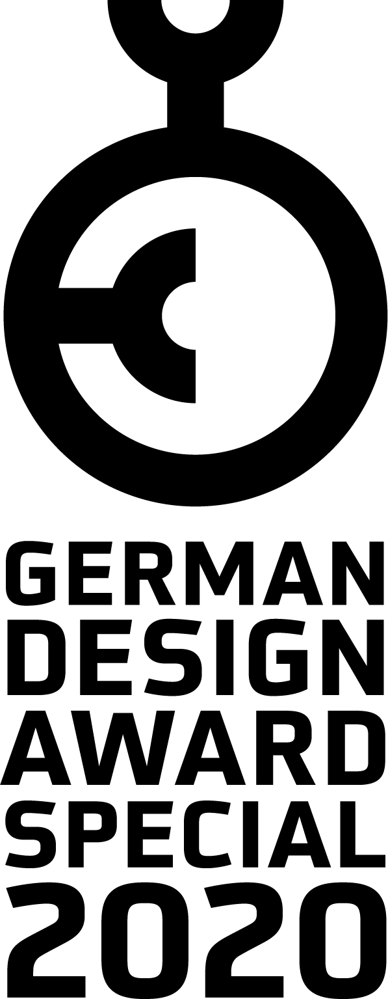
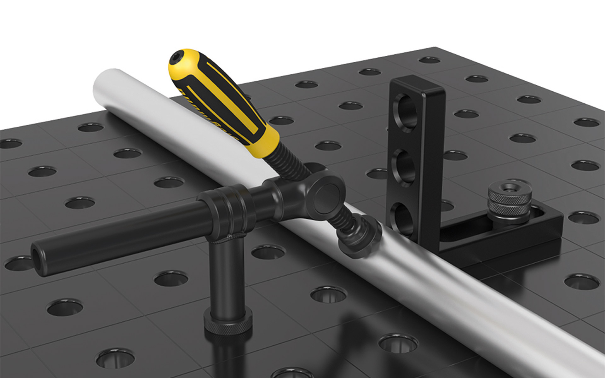

Siegmund Rohrschraubzwinge Universal
Pipe Clamp
Siegmund Rohrschraubzwinge Universal
Rohrschraubzwinge
The Pipe Clamp enables flexible clamping of workpieces and is mounted on welding tables and workbenches
with standardized system bores.
The use ranges from locksmiths up to large-scale industry. Its + / - 42 ° swiveling spindle makes it
possible to clamp both diagonally and straight. This results in many new possibilities and a large,
variable clamping range.
The 200 mm long, horizontal round tube is continuously adjustable and thus creates a variable clamping
range in combination with the swiveling spindle. The vertical round tube has a length of 250 mm. The
prism of the screw clamp is replaceable to secure all types of welding elements safely.
The design underlines the quality and reliability of the product. The ergonomically shaped handle is
made of a hard-wearing hard plastic and a haptic soft component, which provide slip resistance and high
power transmission. The burnished surface guarantees a long service life, the total weight of 2.3 kg
makes daily work easier.
Die Rohrschraubzwinge ermöglicht ein flexibles Spannen von Werkstücken und wird auf Schweißtischen und
Werkbänken mit normierten Systembohrungen aufgesteckt
Ihr Einsatz reicht von Schlossereien bis hin zur Großindustrie. Durch ihre im Winkel von +/- 42°
schwenkbare Spindel kann sowohl schräg, als auch gerade gespannt werden. Dadurch ergeben sich viele neue
Möglichkeiten und ein großer, variabler Spannbereich.
Das 200 mm lange, horizontale Rundrohr ist stufenlos verstellbar und schafft somit in Kombination mit
der schwenkbaren Spindel einen variablen Spannbereich. Das vertikale Rundrohr hat eine Länge von 250 mm.
Das Prisma der Schraubzwinge ist auswechselbar, um alle Arten von Schweißelementen sicher befestigen zu
können.
Das Design unterstreicht die Qualität und Zuverlässigkeit des Produktes. Der ergonomisch geformte Griff
besteht aus einem strapazierfähigen Hartkunststoff und einer haptischen Weichkomponente, die für
Rutschfestigkeit und eine hohe Kraftübertragung sorgen. Die brünierte Oberfläche garantiert eine hohe
Lebensdauer, das Gesamtgewicht von 2,3 kg erleichtert die tägliche Arbeit.

Images © Bernd Siegmund GmbH